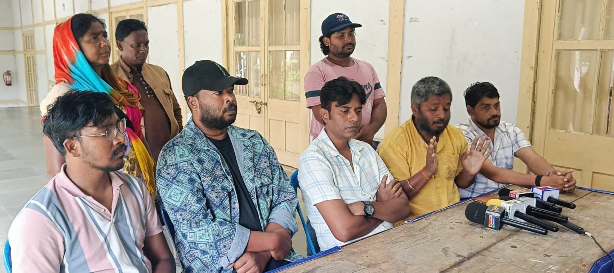

UPCOMING REGIONAL MOVIE
April 18, 2026

SERENG
The upcoming regional film *Sereng* is set to release on 1st May 2026 across Jharkhand. It will be available in Hindi, Nagpuri, Santhali, and Khortha. Featuring Vivek Nayak, Nitesh Kachhap, and Sweta Prajapati, the film is expected to deliver strong performances and celebrate local culture.
REGIONAL FILM POLICY
April 17, 2026

Artists are demanding a strong film policy to support Jharkhand’s cinema industry.
The Jharkhand Kalakar Andolan Sangharsh Samiti is pushing for funding, infrastructure, and recognition for regional films. A proper policy could boost employment and preserve local culture.
About Me

I promote regional culture and cinema from Jharkhand, sharing stories and updates about local talent.
Popular Post


Contact
Email: 13mundu@gmail.com
Phone: 8210202376